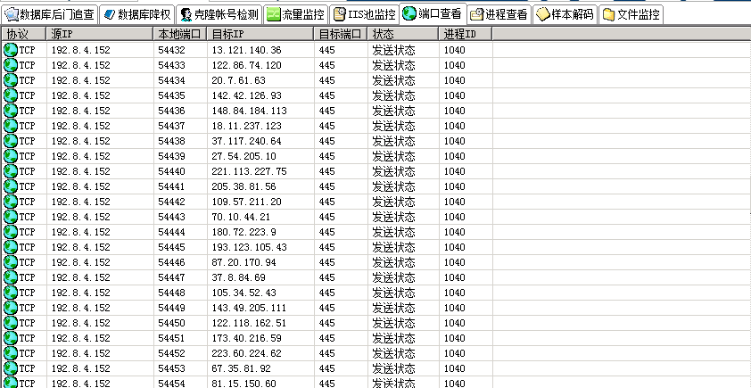

第2篇：蠕虫病毒
0x00 前言
蠕虫病毒是一种十分古老的计算机病毒，它是一种自包含的程序（或是一套程序），通常通过网络途径传播，每入侵到一台新的计算机，它就在这台计算机上复制自己，并自动执行它自身的程序。
常见的蠕虫病毒：熊猫烧香病毒 、冲击波/震荡波病毒、conficker病毒等。
0x01 应急场景
某天早上，管理员在出口防火墙发现内网服务器不断向境外IP发起主动连接，内网环境，无法连通外网，无图脑补。
0x02 事件分析
在出口防火墙看到的服务器内网IP，首先将中病毒的主机从内网断开，然后登录该服务器，打开D盾_web查杀查看端口连接情况，可以发现本地向外网IP发起大量的主动连接：

通过端口异常，跟踪进程ID，可以找到该异常由svchost.exe windows服务主进程引起，svchost.exe向大量远程IP的445端口发送请求：

这里我们推测可以系统进程被病毒感染，使用卡巴斯基病毒查杀工具，对全盘文件进行查杀，发现c:\windows\system32\qntofmhz.dll异常：

使用多引擎在线病毒扫描（http://www.virscan.org/） 对该文件进行扫描:
确认服务器感染conficker蠕虫病毒，下载conficker蠕虫专杀工具对服务器进行清查，成功清楚病毒。

大致的处理流程如下:
1、发现异常：出口防火墙、本地端口连接情况，主动向外网发起大量连接
2、病毒查杀：卡巴斯基全盘扫描，发现异常文件
3、确认病毒：使用多引擎在线病毒对该文件扫描，确认服务器感染conficker蠕虫病毒。
4、病毒处理：使用conficker蠕虫专杀工具对服务器进行清查，成功清除病毒。
0x04 预防处理措施
在政府、医院内网，依然存在着一些很古老的感染性病毒，如何保护电脑不受病毒感染，总结了几种预防措施：
1、安装杀毒软件，定期全盘扫描
2、不使用来历不明的软件，不随意接入未经查杀的U盘
3、定期对windows系统漏洞进行修复，不给病毒可乘之机
4、做好重要文件的备份，备份，备份。